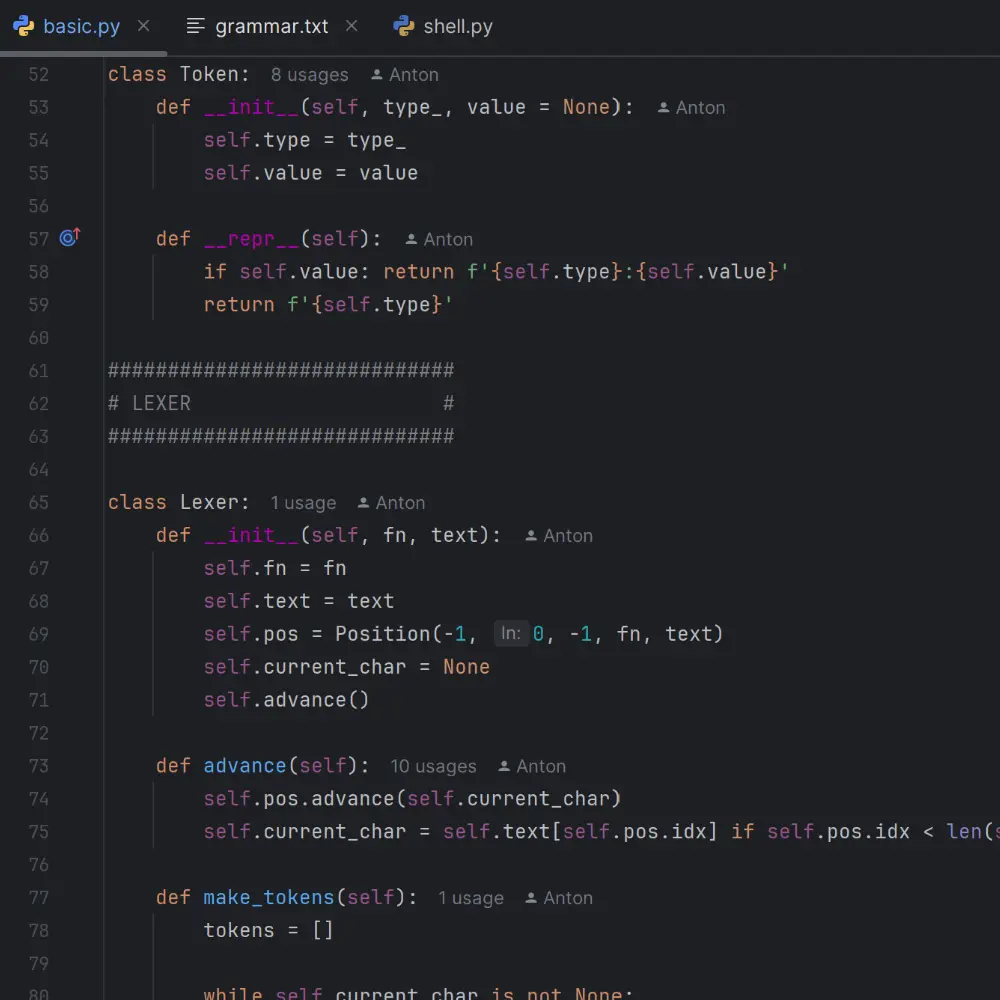
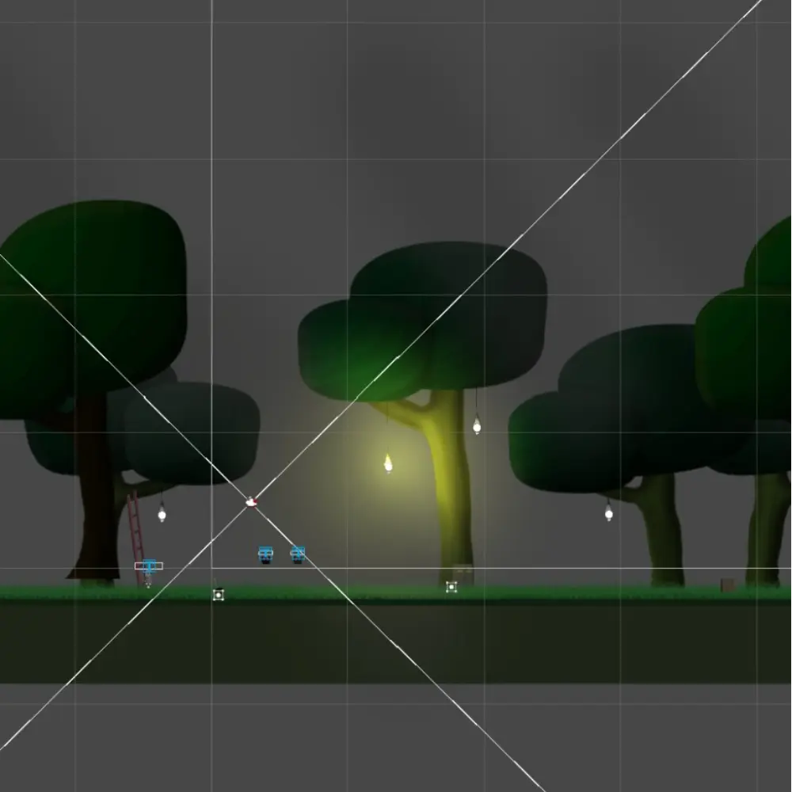
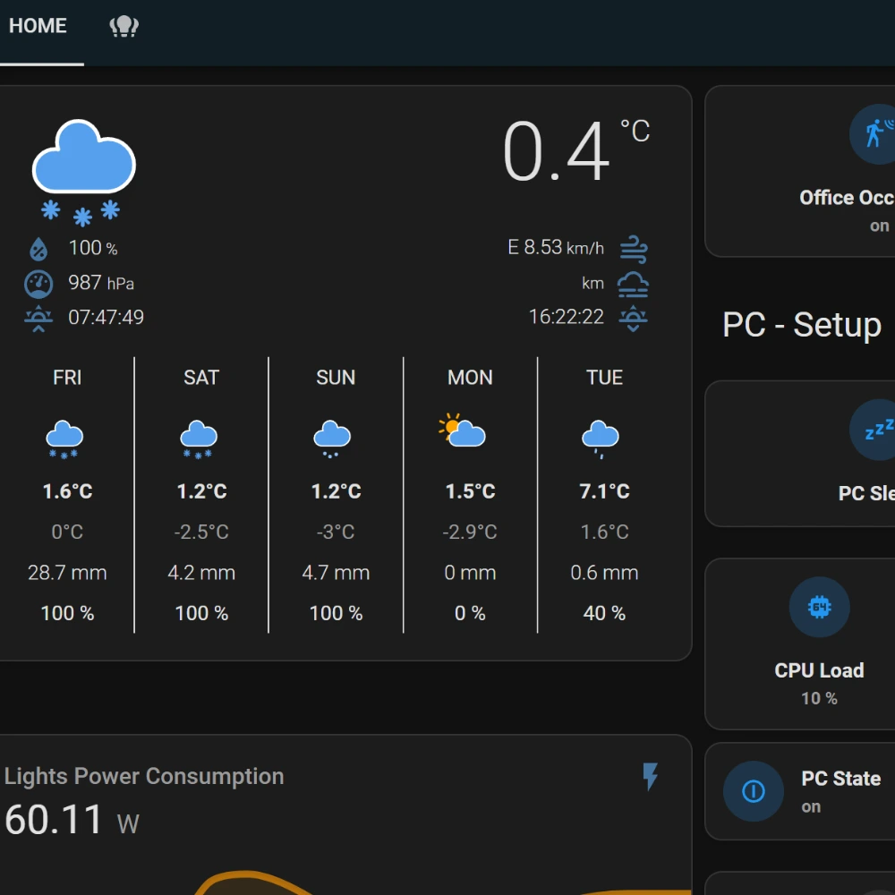

Programming Tutor
Hello!
I am a software developer student with a wide range of interests varying from software and game development to stuff like cooking and calisthenics. I also have a strong passion of helping people like you reach your own goals with your programming projects. If you ever feel stuck and don't know what to do or just need a second pair of eyes. You can contact me and we can plan how I could help.
Subjects
This section is for showcasing the different areas of expertise which I might be able to help you with. The focus of these are programming, which is my main focus. My knowledge comes both from my studies and job internships in the vocational school Keuda and Metropolia University of Applied Sciences, as well as different projects I have made in my free time.
Software
Python, C#
In software development my main source for learning is from studying at both Keuda and Metropolia, but I also have some personal projects I am working on. At Keuda the main software programming language was C# and at Metropolia it has so far been Python.
Games
C#, Unity
My game development expertise is mainly composed of C# using the Unity game engine. I started by making different kinds of smaller 3D games mainly focused on shooter game mechanics, after which I moved to making 2D games.
Websites
JavaScript, HTML, CSS
Most of my web development projects have been made during my studies. I have made a total of 3 functional websites including this one. This being my personal Tutoring/Portfolio website and the other 2 having more of a focus in API and database usage.
Smart IoT
Home Assistant, YAML
In regards to IoT and Smart Homes, we did have some courses on IoT during my studies at Keuda, but most of my knowledge comes from my personal interest in the subject and my smart home project. The project uses a 24/7 smart home server running on a Raspberry Pi.